В этом уроке:
- создаем ключи и подписываем приложение
Тема этого урока не относится непосредственно к программированию. И вполне себе можно писать без этих знаний. Но для общего развития, думаю, об этом все-таки стоит поговорить. Данные знания пригодятся вам, например, когда будете делать приложение с Google-картой, или когда будете выкладывать свое творение на маркет.
Подпись приложения
Вообще, в процессе подписи и верификации участвуют закрытый/открытый ключи и сертификат. Если кому интересно, то можете поискать в Интернете эти понятия и почитать подробнее. Я же, чтобы не усложнять урок, буду просто называть все это ключом. Для понимания темы урока этого будет достаточно.
Вы создали приложение и хотите его протестировать на реальном устройстве или эмуляторе. Для того, чтобы установить и запустить приложение, оно должно быть подписано. Если вы еще не публиковали на маркете свои приложения, то, скорее всего, про то, что приложение надо подписывать, вы слышите первый раз. И точно помните, что ни с какими подписями не возились. Создавали проект, кодили все, что нужно, сохраняли и запускали и все прекрасно работало. Так происходило, потому что Eclipse сам создавал ключ и сам подписывал приложение этим ключом, чтобы вам на первых порах не приходилось думать об этом. И когда ваше приложение устанавливалось, оно было уже подписанным. А если попытаться установить неподписанное приложение, то получим ошибку.
Итак, приложение обязательно должно быть подписанным, и Eclipse любезно берет это на себя. Он подписывает их debug-ключом. Раньше срок его действия был всего один год. Android проверяет срок действия ключа только при установке. Т.е. если вы установили приложение и срок действия ключа истек, вы все равно сможете использовать установленное приложение. А вот установить или обновить приложение, подписанное истекшим ключом, не получится. Система выдаст ошибку.
Сейчас срок debug-ключа равен 30 лет. Но приложение, подписанное debug-ключом, не получится опубликовать на маркете. А значит, нам надо будет создавать свой ключ и подписывать им приложение.
keytool
Для создания ключа нам понадобится утилита keytool. Ее можно найти по адресу <папка с Java>\bin. Она умеет создавать новые ключи и показывать информацию о уже существующих. Давайте сначала попробуем посмотреть информацию о существующем ключе. Для этого возьмем тот самый debug-ключ, который используется для подписи приложений по умолчанию. Узнать где он находится можно в настройках Eclipse: Window > Preferences >Android > Build.
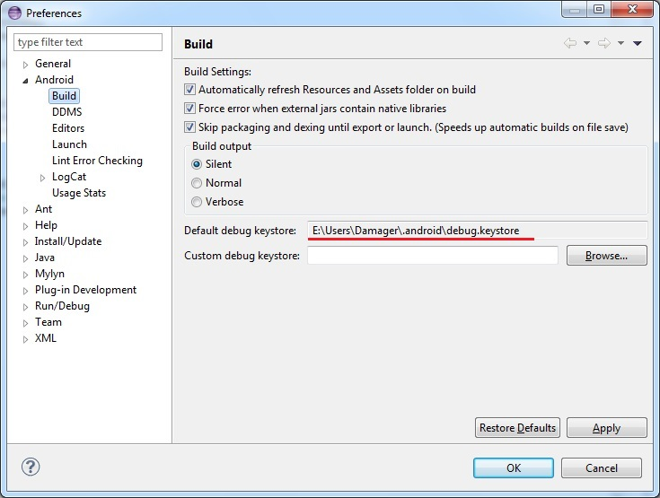
Файл debug.keystore имеет расширение keystore. Это можно перевести как хранилище ключей. Это действительно так, один такой файл может содержать в себе несколько ключей. Для того чтобы обратится к конкретному ключу внутри хранилища используется alias (алиас, можно рассматривать его как имя ключа).
Посмотрим, какие ключи есть в хранилище debug.keystore. Используем команду list. С помощью параметров keystore и storepass укажем имя файла хранилища и пароль к хранилищу:
keytool -list -keystore debug.keystore -storepass android
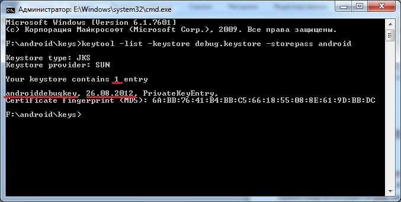
Мы видим, что здесь хранится один ключ с алиасом androiddebugkey, и создан он был 26.08.2012. Этот ключ и используется Eclipse-ом для подписи вашего приложения по умолчанию. Хранилище и ключ имеют одинаковый пароль - android.
Давайте создадим свой ключ. Для этого используем команду genkey и к ней идет куча параметров.
keytool -genkey -keystore mykeys.keystore -storepass spassword -alias mykey1 -keypass kpassword1 -dname “CN=Dmitry Vinogradov O=StartAndroid C=RU” -validity 10000
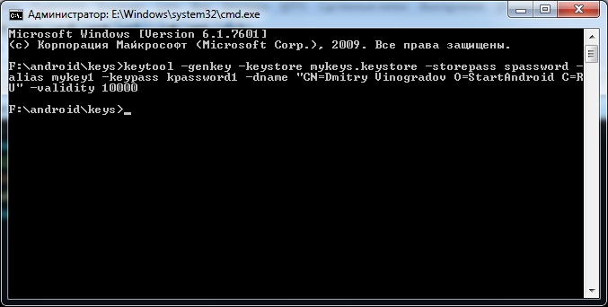
Выглядит страшно, но на самом деле все несложно. Просто надо понимать следующее:
хранилище - это файл и оно защищено паролем
ключ в хранилище имеет алиас и свой пароль
также ключ содержит информацию о владельце и имеет ограниченный срок действия
Именно эти вышеперечисленные параметры мы и задали в скрипте.
keystore - имя файла хранилища
storepass - пароль к хранилищу
alias - алиас создаваемого ключа
keypass - пароль к ключу
dname - информация о владельце ключа
validity - срок действия ключа (в днях)
dname задается в определенном формате. Я указал только имя, организацию и страну.
После выполнения этой команды в хранилище mykeys.keystore создался ключ с вышеуказанными параметрами. Если указанное хранилище не существует, то оно будет создано.
Теперь давайте снова используем команду list и поглядим на только что созданный ключ
keytool -list -keystore mykeys.keystore -storepass spassword
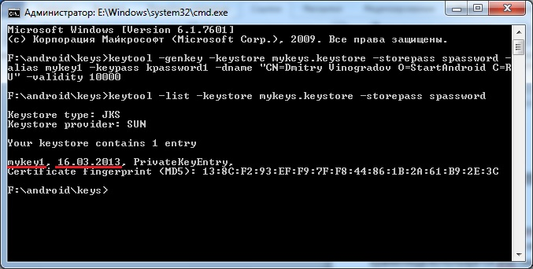
Видим, что внутри все так, как мы и создавали - один ключ с алиасом mykey1.
Туда же можно поместить второй ключ. Но теперь запишем скрипт создания ключа в несколько урезанном виде. Мы не будем указывать пароли к хранилищу и ключу, и информацию о владельце.
keytool -genkey -keystore mykeys.keystore -alias mykey2 -validity 10000
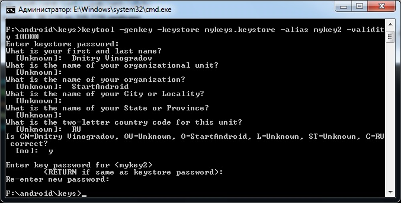
и программа спросит нас о недостающих данных. Сначала пароль к хранилищу, затем данные о владельце ключа (я заполнял не все требуемые значения), затем пароль для создаваемого ключа и подтверждение пароля.
Функционально разницы нет, но при таком способе вам не надо знать формат ввода параметра dname (утилита все спросит сама), и посторонним не видны пароли, которые вы вводили.
Теперь в хранилище два ключа. Выполним list и убедимся.
keytool -list -keystore mykeys.keystore
Обратите внимание, что я не ввел пароль от хранилища (например, чтобы не «светить» его). Утилита спросит меня:
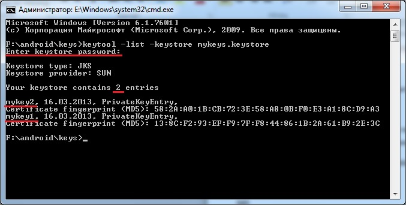
Видно, что был запрошен пароль и в хранилище сейчас два ключа.
Команду list можно еще выполнить с параметром v. Этот параметр добавляет информативности.
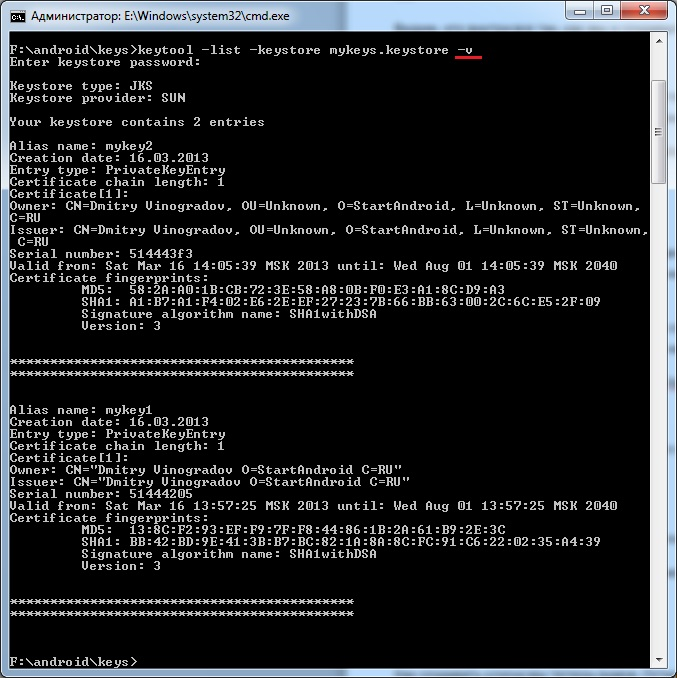
Теперь для каждого ключа виден не только алиас и дата создания, но и инфа о владельце, срок действия и пр.
Параметр v также можно использовать и с командой genkey. После создания ключа будет выведено немного информации о нем в консоль.
jarsigner
Итак, разобрались с keytool. Знаем, как создавать хранилище с ключами и как посмотреть инфу о существующих. Осталось узнать, как подписать приложение ключом. Для этого используется другая утилита - jarsigner.
Скрипт подписи выглядит так:
jarsigner -keystore mykeys.keystore -storepass spassword -keypass kpassword1 Package1.apk mykey1
Имена параметров нам знакомы по keytool: хранилище (keystore), пароль (storepass) к нему и пароль (keypass) к ключу. А последние два параметра – это имя APK-файла, который вы хотите подписать и алиас ключа из указанного хранилища, который вы хотите использовать для подписи.
После этого приложение будет подписано и система примет его к установке.
Ради интереса давайте попробуем установить неподписанный APK. Чтобы создать его надо щелкнуть правой кнопкой мыши на проекте в Eclipse и выбрать Android tools > Export Unsigned Application Package. Далее указываем путь, куда сохранить APK-файл. Eclipse создает приложение из проекта и сохраняет его в указанный каталог. После этого он выводит сообщение, что перед публикацией приложения необходимо его подписать и сжать (утилитой zipalign).
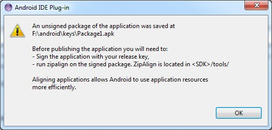
Попробуем установить приложение на эмулятор с помощью adb. Получаем ошибку Failure [INSTALL_PARSE_FAILED_NO_CERTIFICATES]:
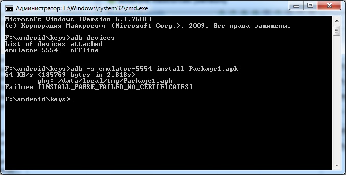
Система обнаружила, что приложение не подписано.
Если же сначала закинуть APK на эмулятор и там запустить файловым менеджером, получим такое сообщение при установке:
Wizard
Eclipse предоставляет Wizard, который позволяет реализовать все вышеописанные шаги по подготовке приложения к установке. Для этого надо на проекте в Eclipse щелкнуть правой кнопкой и выбрать Android tools > Export Signed Application Package.
Wizard на всякий случай уточнит проект
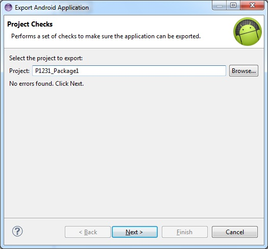
Затем надо выбрать: использовать существующее хранилище или создавать новое. Если используем существующее, то выбираем его и вводим пароль к этому хранилищу.
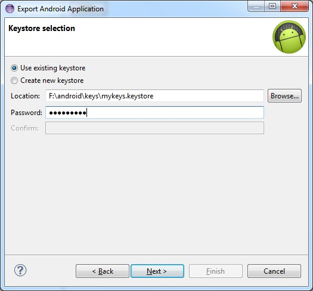
Жмем Next, и визард спрашивает, какой из существующих ключей использовать, либо дает возможность создать новый.
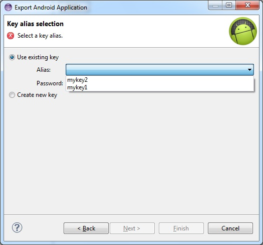
Выбираем существующий ключ, вводим пароль к нему
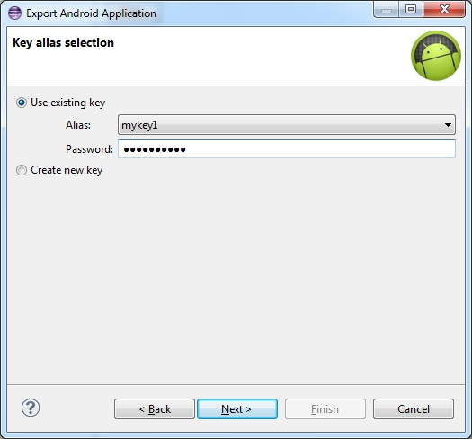
Осталось указать путь и имя файла, куда Eclipse сохранит готовое, подписанное и сжатое приложение. Заодно он сразу показывает срок действия сертификата.
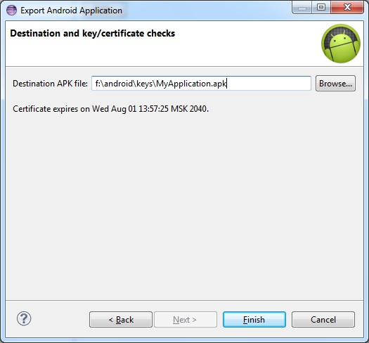
Жмем Finish и получаем готовое приложение, которое можно публиковать на маркете.
Если же у вас пока нет ключа, то Wizard поможет вам его создать, чтобы не надо было возиться с консолью и keytool.
В этом случае вы указываете, что хотите создать хранилище
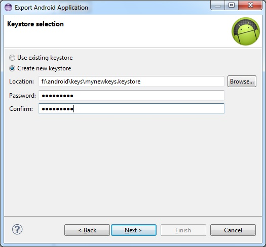
Далее надо создать ключ
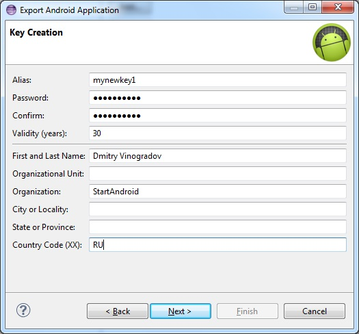
Здесь вы указываете алиас, пароль, срок действия (в годах) и инфу о владельце.
Ну и остается указать путь к создаваемому файлу

По поводу срока действия ключа, в документацие пишут, что рекомендуется ставить 25 лет. И что при публикации приложения на маркете, проверяется, что срок действия закончится позднее, чем 22 октября 2033. Думаю, эта дата будет периодически сдвигаться.